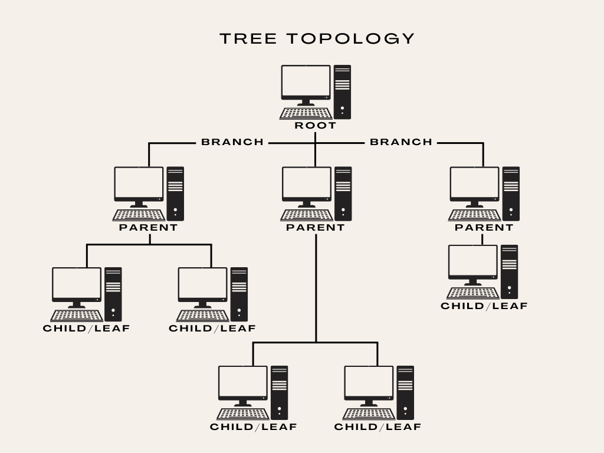

×
Understanding Tree Topology
What is Tree Topology?
A tree topology is a hierarchical network structure in which components are arranged like the branches of a tree. It starts from a root node at the top and branches out into multiple levels of child nodes.

Key Terminology
- Root Node: The top-level node in the hierarchy that serves as the central point of the tree.
- Parent Node: A node that has one or more child nodes connected below it.
- Child Node: A node connected to a parent node above it.
- Leaf Node: A node at the edge of the tree with no children.
- Branch: A transmission path connecting different nodes.
- Depth/Level: The distance from the root to a particular node.
Advantages
- Scalable - Easy to expand by adding more nodes
- Manageable - Simple hierarchical structure
- Efficient - No loops or collisions in data transmission
- Centralized administration from the root node
- Good for networks with clear hierarchies
Disadvantages
- Single point of failure - If the root node fails, the entire network below it fails
- Limited redundancy - Single paths between nodes
- Performance bottlenecks can occur at higher levels
- Limited scalability in depth (affects performance)
Real-World Applications
- File systems organization
- Directory services (like LDAP and Active Directory)
- Network routing (spanning tree protocols)
- Website navigation structures
- Organizational hierarchies
- Database index structures (B-trees)
Using This Simulator
This interactive simulator allows you to:
- Create and modify a tree structure
- Toggle nodes on/off to simulate network failures
- Simulate message routing between nodes to understand path selection
- Explore the impact of node failures on connectivity
- View statistics about your tree structure
To get started, create a root node and begin building your network.